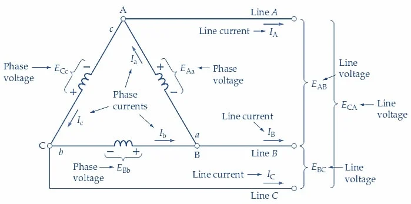
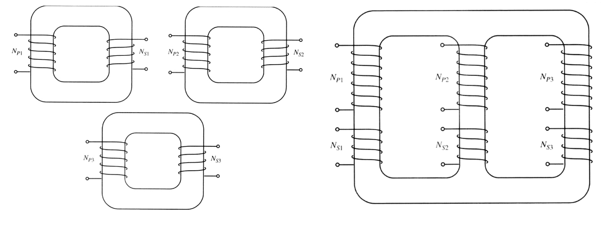
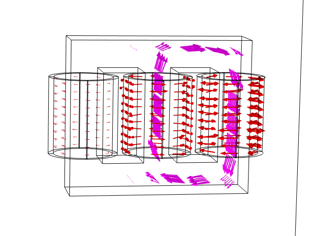
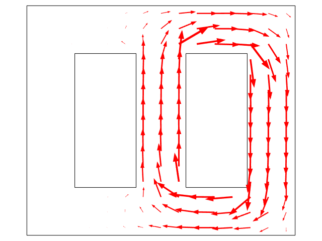
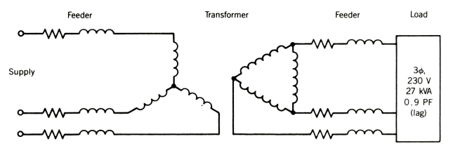
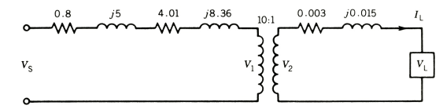
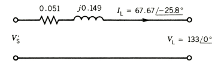
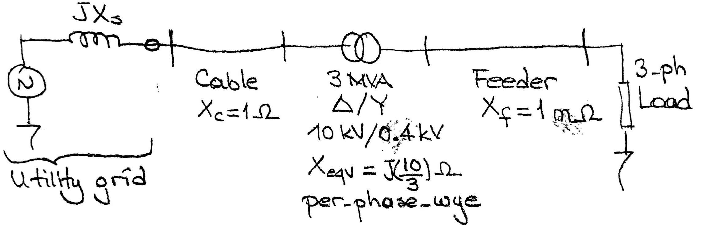

class: center, middle # EE-361 # 3-PHASE TRANSFORMERS ## Ozan Keysan [keysan.me](http://keysan.me) Office: C-113 <span class="meta">•</span> Tel: 210 7586 --- # WHY 3-PHASE? -- - ## More power per unit wire length. - ## Constant Power [Power Graphs](https://docs.google.com/spreadsheets/d/1RP-MsrHwybAG6J3CFTbdLOCTvGdIdkaWUkhRuAHPWd0/edit?usp=sharing) - ## Rotating MMF ### [3-phase](http://people.ece.umn.edu/users/riaz/animations/sinwaves0.gif), [phasor](http://people.ece.umn.edu/users/riaz/animations/vecmovieslow.gif)(wait until EE362 for details) --- # Delta (\\(\Delta\\)) - Wye (Y) Connection <img src="http://lukeb.members.sonic.net/stator_files/stator_delta_y.png" alt="Drawing" style="width: 700px;"/> --- # Wye(or Star) Connection (Y) <img src="http://upload.wikimedia.org/wikipedia/commons/thumb/4/48/3_Phase_Power_Connected_to_Wye_Load.svg/2000px-3_Phase_Power_Connected_to_Wye_Load.svg.png" alt="Drawing" style="width: 500px;"/> ### \\( |V\_{line-to-line}| = \sqrt{3} \; |V\_{phase}|\\) ### \\( |I\_{line}| = |I\_{phase}|\\) --- # Delta Connection (\\(\Delta\\))  ### \\( |V\_{line-to-line}| = |V\_{phase}|\\) ### \\( |I\_{line}| = \sqrt{3} \; |I\_{phase}|\\) --- #Power Relations -- ## Regardless of the connection type ## \\( S= 3V\_{phase}I\_{phase}\\) -- ## or ## \\( S= \sqrt{3}V\_{line-to-line}I\_{line}\\) --- # Impedance Transformation  ## \\(Z_{\Delta} = 3 Z\_Y \\) --- # 3-Phase Transformers <img src="https://www.electronics-tutorials.ws/wp-content/uploads/2018/05/transformer-trans36.gif" alt="Drawing" style="width: 400px;"/> ### It is possible to have electrical Delta (\\(\Delta\\)) or Wye (Y) connection at the primary or secondary terminals. --- # 3-Phase Transformer  ### Combined transformer is lighter, cheaper, more efficient --- # 3-Phase Transformers  --- # 3-Phase Transformers <img src="http://img.directindustry.com/images_di/photo-g/three-phase-transformers-25208-2513135.jpg" alt="Drawing" style="width: 500px;"/> --- # Flux Path in a 3-Phase Transformer  --- # Flux Path in a 3-Phase Transformer  --- # 3-Phase Transformers <img src="http://upload.wikimedia.org/wikipedia/en/f/fe/Transformer_winding_formats.jpg" alt="Drawing" style="width: 500px;"/> --- # Connection Options -- - ## Wye-Wye: (\\(Y-Y\\)) -- - ## Delta-Delta: (\\(\Delta- \Delta\\)) -- - ## Wye-Delta: (\\(Y-\Delta\\)) -- - ## Delta-Wye: (\\(\Delta-Y\\)) --- ### Transformer Nameplates <img src="https://www.energize.co.za/sites/default/files/inline-images/202201/figure_1-_transformer_nameplate.jpg" alt="Drawing" style="width: 400px;"/> [3-phase transformer assembly](http://www.youtube.com/watch?v=9Y958Vc5ohI&feature=BFa), [Info about vector group](http://en.wikipedia.org/wiki/Vector_group), [Nameplate info](https://electricalacademia.com/transformer/transformer-nameplate-details-explained/) --- # Wye-Wye: (\\(Y-Y\\))  - ### Not very common - ### 3rd Harmonics problem - ### Phase Shift: 0 --- # Delta-Delta: (\\(\Delta- \Delta\\))  - ### Common in medium voltage transformers - ### No 3rd Current Harmonics - ### Phase Shift: 0 --- # Wye-Delta: (\\(Y-\Delta\\))  - ### Usually as step-down transformer - ### Phase shift: 30 deg. --- # Delta-Wye: (\\(\Delta-Y\\))  - ### Usually as step-up transformer - ### Also used in distribution transformers (because of neutral) - ### Phase shift: -30 deg. --- # Turns-Ratio vs Voltage Ratio - ## Turns Ratio: \\(n=\frac{N\_1}{N\_2}=\frac{V1\_{ph}}{V2\_{ph}}\\) -- - ## Line-to-line Voltage Ratio: \\(=\frac{V1\_{line-to-line}}{V2\_{line-to-line}}\\) -- ### For (\\(Y-\Delta\\)) and (\\(\Delta-Y\\)) ### !! Line-to-line voltage ratio \\(\ne\\) Turns ratio -- ### Line-to-line voltage ratio is more useful in 3-phase transformers --- #Example on 3-ph Transformers ## Three single-phase, 2 MVA, 10 kV/230 V 50 Hz transformers are connected in \\(\Delta-Y\\) configuration to form a three-phase transformer bank. -- ## a) Determine the line-to-line voltage and line current ratings of the 3-phase transformer bank, both on the primary and the secondary side. --- #Example on 3-ph Transformers ## Three single-phase, 2 MVA, 10 kV/230 V 50 Hz transformers are connected in \\(\Delta-Y\\) configuration to form a three-phase transformer bank. -- ## b) Determine the total power rating of the system -- ## c) Determine the turns ratio and line-to-line voltage ratio of the transformer --- ## Assume the transformer has an equivalent reactance transferred to LV side : \\(jx_1' + jx_2 = j8m\Omega \\) -- ## The HV side is connected to a source which has a series reactance \\(jX_s=j0.3125 \Omega \\) and the LV side is connected to load through a feeder having \\(jX_f=j1.5m\Omega\\). -- ## d) Draw the three phase equivalent circuit and the referred to LV side on per-phase wye equivalent circuit. --- ## e) Now assume the load is drawing rated current at unity pf. when phase voltage(i.e. line-to-neutral) at the load is 230 V. Calculate the referred voltage \\(V_s'\\) and the actual line-to-line voltage of the source. --- ## Example (P.Sen Ex. 2.8) -- ### A 3-phase, 230 V(l-l), 27 kVA, Y-connected 0.9pf (lagging) load is supplied by -- three 10 kVA, 1330:230 V transformers connected in Y-Δ configuration -- by a feeder whose impedance is 0.003+j0.015 Ω per phase. -- ### The transformers are supplied from a source with a feeder whose impedance is 0.8+j5.0 Ω per phase. -- ### The equivalent impedance of the transformer referred to the low-voltage side is 0.12+j0.25 Ω. -- ### Determine the required line to line voltage at the source side if the load voltage is 230 V. --- ## Example (P.Sen Ex. 2.8) ## Original Configuration  --- ## Example (P.Sen Ex. 2.8) ## Single Line Diagram  --- ## Example (P.Sen Ex. 2.8) ## Single Line Diagram (Referred to LV Side)  --- #Example on 3-ph Transformers ### Single-line diagram of a power system is given below:  ### Obtain the single-phase equivalent circuit of the above system on the HV side (use per-phase-Wye basis, assume line-to-line voltage of source is Es, Y connected). --- # Extra Reading Material ## [Three Phase Transformers](http://my.ece.msstate.edu/faculty/donohoe/ece3614three_phase_transformers.pdf) ## [Review of three phase AC circuits](http://www.egr.unlv.edu/~eebag/EE%20340%20-%20Review%203-Phase%20Ckts.pdf) ## [Power Transformers](http://www.egr.unlv.edu/~eebag/Power%20Transformers.pdf) --- ## You can download this presentation from: [keysan.me/ee361](http://keysan.me/ee361)